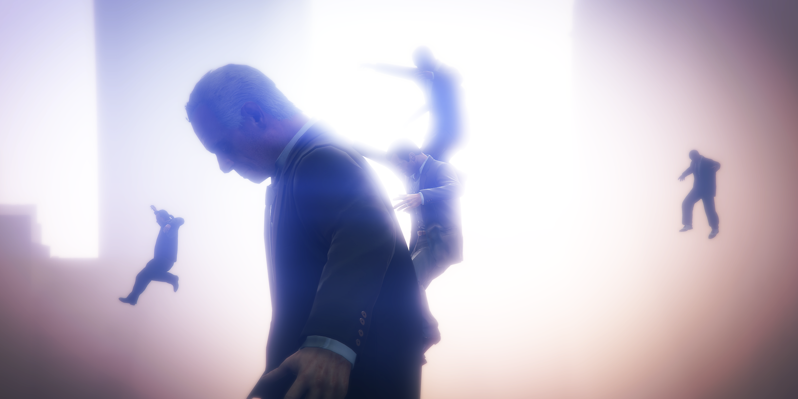

6 Surrealist Photography
//general introduction about avant garde traditions of distancing from reality and exploring the possibilities of CGI decoupled from realism and life-like simulation, the game as an engine that can be used to create oniric scenes, which in turn reveal the untapped possibilities hidden within the game code, the player as a modder which can generate worlds within the world…

Tutorial
NPCs
NPCs are non playable characters and in GTA V scripting they are called Peds. Peds are an entity like Props or Vehicles and can be created, assigned different model textures, equipped with weapons and controlled through different tasks.
Spawn a new NPC
A GTA V Ped can be created by the World.CreatePed function. This takes two parameters: an ID to assign the 3D model and textures, and the location where the Ped is created.
The model IDs are the same we used in the previous tutorial, when we changed our character’s appearance to a cat. A list of all available models can be found here. PedHash.Cat, PedHash.Deer, PedHash.AviSchwartzmanare all possible IDs we can assign to the NPC we want to create.
We can create a new model variable, which we will name ‘myPedModel’ and assign it a model ID:
The location where the NPC is created through a vector3 data type, which represents a vector in 3D space. This basically means a point that contains X, Y and Z coordinates. We can give absolute coordinates, making the Ped appear at a specific location in the game, but we can also use a location relative to our position in the game. In order not to risk making a Ped appear somewhere completely outside of our view – on some mountain or in the sea – let’s look at a vector3 that points to a position in front of the player.
We want to establish the player withGame.Player.Character, followed by a function that retireve the player position within the game world. That’s called by using GetOffsetInWorldCoords, which takes a vector3. The values of the X, Y and Z of the vector 3 offset the location based on the origin point represented by the player. Therefore, we can move the place where we want the Ped to appear by adding values to the X axis (left or right of player), Y axis (ahead or behind the player), and Z axis (above or below the player).
To make a Ped appear in front of the player we can create a vector3 data type with 0 for X, 5 for Y and 0 for Z: new Vector3(0, 5, 0). Let’s make a vector3 variable, which we will name ‘myPedSpawnPosition’, assign it the values above for X, Y and Z coordinates from the player position.
Now we can use the model and the position variables to spawn the NPC in front of the player. We’ll create a Ped named ‘myPed1’ and use the World.CreatePed function with the two variables as parameters:
Example code
using System;
using System.Collections.Generic;
using System.Linq;
using System.Text;
using System.Threading.Tasks;
using GTA;
using GTA.Math;
using System.Windows.Forms;
using System.Drawing;
using GTA.Native;
namespace moddingTutorial
{
public class moddingTutorial : Script
{
public moddingTutorial()
{
this.Tick += onTick;
this.KeyUp += onKeyUp;
this.KeyDown += onKeyDown;
}
private void onTick(object sender, EventArgs e) //this function gets executed continuously
{
}
private void onKeyUp(object sender, KeyEventArgs e)//everything inside here is executed only when we release a key
{
}
private void onKeyDown(object sender, KeyEventArgs e) //everything inside here is executed only when we press a key
{
//when pressing 'K'
if(e.KeyCode == Keys.K)
{
//select a model and store it in a variable
Model myPedModel = PedHash.AviSchwartzman;
//create a position relative to the player
Vector3 myPedSpawnPosition = Game.Player.Character.GetOffsetInWorldCoords(new Vector3(0, 5, 0));
//create a Ped with the chosen model, spawning at the chosen position
var myPed1 = World.CreatePed(myPedModel, myPedSpawnPosition);
}
}
}
}Control Multiple NPCs
You can create multiple NPCs and give them custom names. Let’s create a human NPC and a cat NPC and call them Jim and MannyTheCat respectively:
var Jim = World.CreatePed(PedHash.AviSchwartzman, Game.Player.Character.GetOffsetInWorldCoords(new Vector3(0, 5, 0)));
var MannyTheCat = World.CreatePed(PedHash.Cat, Game.Player.Character.GetOffsetInWorldCoords(new Vector3(0, 3, 0)));Try to kill one of the Ped NPCs you created by using the Kill().
Note that when you kill your Ped ‘Jim’, it falls on the floor and it won’t actually respond to any call or task you will give it, but it’s not removed from the game. To remove a specific Ped you have to use the Deletefunction, which will remove that instance (and will make the NPC disappear).
To handle groups of NPCs we can use the List class. A List is a collection of objects, and a Listof Peds allows us to store our NPCs. We can use an index to retrieve and control specific Peds in the group. You can see the reference for more detailed information.
Create a List of Peds named myPeds as a global variable in the public class public class moddingTutorial : Script.
In the onKeyDown function private void onKeyDown(object sender, KeyEventArgs e) create 5 new Peds with a For Loop
for (int i = 0; i < 5; i++)
{
//spawn a new Ped called newPed
var newPed = World.CreatePed(PedHash.Clown01SMY, Game.Player.Character.GetOffsetInWorldCoords(new Vector3(i-2.5f, 8, 0)));
//add the new Ped to my list of Peds myPeds
myPeds.Add(newPed);
}Now all the 5 Peds are part of the myPeds[] List. You can control each Ped individually by calling their individual number ID in the group. The first spawn Ped is myPed[0], the last one is myPeds[4].
Tell the 1st spawned NPC to start wandering around:
Kill the 2nd spawned NPC:
Tell the 3rd NPC to jump:
Tell the 4th NPC to walk toward the camera:
Tell the 5th NPC to put their hands up for 3 seconds:
Nearby NPCs
Script Hook V DOt Net provides a function GetNearbyPedswhich groups all the Peds within a nearby radius from a character.
Create a new group that adds Peds which are closer than 20 meters from the player (add that as a global variable in public class moddingTutorial : Script):
Use a Foreach Loop to get every Ped in the group and give them the task to put their hands up for a second:
GetNearbyPeds does not sort out individual Pedsin the group based on distance, so we have to do a bit of manual filtering to get the nearest NPC within the chosen radius from the player character.
Define the global variables in the public class public class moddingTutorial : Script:
Get and parse the nearby NPCs in the OnTick function private void onTick(object sender, EventArgs e):
//set radius
float maxDistance = 25f;
//get nearest peds
Ped[] pedsGroup = World.GetNearbyPeds(Game.Player.Character, maxDistance);
float lastDistance = maxDistance;
foreach (Ped ped in pedsGroup)
{
float distance = ped.Position.DistanceTo(Game.Player.Character.Position);
if (distance < lastDistance)
{
nearestPed = ped;
lastDistance = distance;
}
}
if (nearestPed != null && oldNearestPed != nearestPed)
{
nearestPed.Task.HandsUp(1000);
}
oldNearestPed = nearestPed;Give Tasks to NPCs
A Ped can be given a task using the Task function, just like we did in the previous tutorial for the player character.
Some tasks involve interacting with other characters (Peds or Game.Player.Character) or take different parameters like positions (vector3), duration (in milliseconds), and other data types.
We can give our NPC the task to fight against the player by using the FightAgainst function, which requires a Ped parameter – which in the case of the player is expressed as Game.Player.Character.
Try to replace the task to “fight against” with “flee from (player)” , “hands up”, “jump”… or some of the other available tasks.
See the TaskInvoker list for possible tasks, or click on the list of available tasks below.
List of Available Tasks
void AchieveHeading (float heading, int timeout=0)
void AimAt (Entity target, int duration)
void AimAt (Vector3 target, int duration)
void Arrest (Ped ped)
void ChatTo (Ped ped)
void Jump ()
void Climb ()
void ClimbLadder ()
void Cower (int duration)
void ChaseWithGroundVehicle (Ped target)
void ChaseWithHelicopter (Ped target, Vector3 offset)
void ChaseWithPlane (Ped target, Vector3 offset)
void CruiseWithVehicle (Vehicle vehicle, float speed, DrivingStyle style=DrivingStyle.Normal)
void DriveTo (Vehicle vehicle, Vector3 target, float radius, float speed, DrivingStyle style=DrivingStyle.Normal)
void EnterAnyVehicle (VehicleSeat seat=VehicleSeat.Any, int timeout=-1, float speed=1f, EnterVehicleFlags flag=EnterVehicleFlags.None)
void EnterVehicle (Vehicle vehicle, VehicleSeat seat=VehicleSeat.Any, int timeout=-1, float speed=1f, EnterVehicleFlags flag=EnterVehicleFlags.None)
void FightAgainst (Ped target)
void FightAgainst (Ped target, int duration)
void FightAgainstHatedTargets (float radius)
void FightAgainstHatedTargets (float radius, int duration)
void FleeFrom (Ped ped, int duration=-1)
void FleeFrom (Vector3 position, int duration=-1)
void FollowPointRoute (params Vector3[] points)
void FollowPointRoute (float movementSpeed, params Vector3[] points)
void FollowToOffsetFromEntity (Entity target, Vector3 offset, float movementSpeed, int timeout=-1, float distanceToFollow=10f, bool persistFollowing=true)
void GoTo (Entity target, Vector3 offset=default(Vector3), int timeout=-1)
void GoTo (Vector3 position, int timeout=-1)
void GoStraightTo (Vector3 position, int timeout=-1, float targetHeading=0f, float distanceToSlide=0f)
void GuardCurrentPosition ()
void HandsUp (int duration)
void LandPlane (Vector3 startPosition, Vector3 touchdownPosition, Vehicle plane=null)
void LeaveVehicle (LeaveVehicleFlags flags=LeaveVehicleFlags.None)
void LeaveVehicle (Vehicle vehicle, bool closeDoor)
void LeaveVehicle (Vehicle vehicle, LeaveVehicleFlags flags)
void LookAt (Entity target, int duration=-1)
void LookAt (Vector3 position, int duration=-1)
void ParachuteTo (Vector3 position)
void ParkVehicle (Vehicle vehicle, Vector3 position, float heading, float radius=20.0f, bool keepEngineOn=false)
void PerformSequence (TaskSequence sequence)
void PlayAnimation (string animDict, string animName)
void PlayAnimation (string animDict, string animName, float speed, int duration, float playbackRate)
void PlayAnimation (string animDict, string animName, float blendInSpeed, int duration, AnimationFlags flags)
void PlayAnimation (string animDict, string animName, float blendInSpeed, float blendOutSpeed, int duration, AnimationFlags flags, float playbackRate)
void RappelFromHelicopter ()
void ReactAndFlee (Ped ped)
void ReloadWeapon ()
void RunTo (Vector3 position, bool ignorePaths=false, int timeout=-1)
void ShootAt (Ped target, int duration=-1, FiringPattern pattern=FiringPattern.Default)
void ShootAt (Vector3 position, int duration=-1, FiringPattern pattern=FiringPattern.Default)
void ShuffleToNextVehicleSeat (Vehicle vehicle=null)
void Skydive ()
void SlideTo (Vector3 position, float heading)
void StandStill (int duration)
void StartScenario (string name, float heading)
void StartScenario (string name, Vector3 position, float heading)
void SwapWeapon ()
void TurnTo (Entity target, int duration=-1)
void TurnTo (Vector3 position, int duration=-1)
void UseParachute ()
void UseMobilePhone ()
void UseMobilePhone (int duration)
void PutAwayParachute ()
void PutAwayMobilePhone ()
void VehicleChase (Ped target)
void VehicleShootAtPed (Ped target)
void Wait (int duration)
void WanderAround ()
void WanderAround (Vector3 position, float radius)
void WarpIntoVehicle (Vehicle vehicle, VehicleSeat seat)
void WarpOutOfVehicle (Vehicle vehicle)
void ClearAll ()
void ClearAllImmediately ()
void ClearLookAt ()
void ClearSecondary ()
void ClearAnimation (string animSet, string animName)You can spawn a group of NPCs and give them individual tasks. You can also make them interact with each other (or with the player character). Here we spawn 3 NPCs and tell the to fight with each other.
//create a list of Peds
List<Ped> myPeds = new List<Ped>();
//create a list of Ped models
List<Model> myPedModel = new List<Model>();
//manually add models for each ped
myPedModel.Add(PedHash.Clown01SMY);
myPedModel.Add(PedHash.Doctor01SMM);
myPedModel.Add(PedHash.Abigail);
for(int i = 0; i < myPedModel.Count; i++)
{
//spawn a new Ped for each model
var newPed = World.CreatePed(myPedModel[i], Game.Player.Character.GetOffsetInWorldCoords(new Vector3(i*2, 3, 0)));
//add the new Ped to my list of Peds
myPeds.Add(newPed);
}
myPeds[0].Task.FightAgainst(myPeds[1]);
myPeds[1].Task.FightAgainst(myPeds[2]);
myPeds[2].Task.FightAgainst(myPeds[0]);
To clear a task at any given moment we can use the task ClearAllImmediately();. To stop our 3 NPCs from fighting each other we give them the task to stop everything they are doing immediately.
myPeds[0].Task.ClearAllImmediately();
myPeds[1].Task.ClearAllImmediately();
myPeds[2].Task.ClearAllImmediately();Peace is restored in the universe. To remove the NPCs use Delete().
Scenarios
Screnarios are short looping animations that can be triggered with the Task of type StartScenario. Unlike other animation types (see next chapter below), scenarios include props with the moevement of the character. Also, certain scenarios only work with specific model, so we won’t be able to make a deer drink coffe or use a binocular (we’ll make a deer pole dancing later don’t worry).
Scenarios can be invoked by using the task StartScenario(string name, Vector3 position, float heading). the StartScenario task function requires 3 paramenters: the name of the scenario we want to play, the position in which our Ped will be playing the scenario (through a Vector3 data type containing the XYZ coordinates), and the rotation degree (between 1 and 360° - note: this seems to work only when applied to the player character and not on Ped NPCs).
Try to play the scenario animation WORLD_HUMAN_TOURIST_MAP on our game character:
Game.Player.Character.Task.StartScenario("WORLD_HUMAN_TOURIST_MAP", Game.Player.Character.Position, 1f);To stop the scenario animation you can use Game.Player.Character.Task.ClearAllImmediately(); like with every other task.
You can find all available scenarios here or click on the list of below
List of available scenarios
WORLD_HUMAN_AA_COFFEE
WORLD_HUMAN_AA_SMOKE
WORLD_HUMAN_BINOCULARS
WORLD_HUMAN_BUM_FREEWAY
WORLD_HUMAN_BUM_SLUMPED
WORLD_HUMAN_BUM_STANDING
WORLD_HUMAN_BUM_WASH
WORLD_HUMAN_VALET
WORLD_HUMAN_CAR_PARK_ATTENDANT
WORLD_HUMAN_CHEERING
WORLD_HUMAN_CLIPBOARD
WORLD_HUMAN_CLIPBOARD_FACILITY
WORLD_HUMAN_CONST_DRILL
WORLD_HUMAN_COP_IDLES
WORLD_HUMAN_DRINKING
WORLD_HUMAN_DRINKING_FACILITY
WORLD_HUMAN_DRINKING_CASINO_TERRACE
WORLD_HUMAN_DRUG_DEALER
WORLD_HUMAN_DRUG_DEALER_HARD
WORLD_HUMAN_MOBILE_FILM_SHOCKING
WORLD_HUMAN_GARDENER_LEAF_BLOWER
WORLD_HUMAN_GARDENER_PLANT
WORLD_HUMAN_GOLF_PLAYER
WORLD_HUMAN_GUARD_PATROL
WORLD_HUMAN_GUARD_STAND
WORLD_HUMAN_GUARD_STAND_CASINO
WORLD_HUMAN_GUARD_STAND_CLUBHOUSE
WORLD_HUMAN_GUARD_STAND_FACILITY
WORLD_HUMAN_GUARD_STAND_ARMY
WORLD_HUMAN_HAMMERING
WORLD_HUMAN_HANG_OUT_STREET
WORLD_HUMAN_HANG_OUT_STREET_CLUBHOUSE
WORLD_HUMAN_HIKER
WORLD_HUMAN_HIKER_STANDING
WORLD_HUMAN_HUMAN_STATUE
WORLD_HUMAN_JANITOR
WORLD_HUMAN_JOG
WORLD_HUMAN_JOG_STANDING
WORLD_HUMAN_LEANING
WORLD_HUMAN_LEANING_CASINO_TERRACE
WORLD_HUMAN_MAID_CLEAN
WORLD_HUMAN_MUSCLE_FLEX
WORLD_HUMAN_MUSCLE_FREE_WEIGHTS
WORLD_HUMAN_MUSICIAN
WORLD_HUMAN_PAPARAZZI
WORLD_HUMAN_PARTYING
WORLD_HUMAN_PICNIC
WORLD_HUMAN_POWER_WALKER
WORLD_HUMAN_PROSTITUTE_HIGH_CLASS
WORLD_HUMAN_PROSTITUTE_LOW_CLASS
WORLD_HUMAN_PUSH_UPS
WORLD_HUMAN_SEAT_LEDGE
WORLD_HUMAN_SEAT_LEDGE_EATING
WORLD_HUMAN_SEAT_STEPS
WORLD_HUMAN_SEAT_WALL
WORLD_HUMAN_SEAT_WALL_EATING
WORLD_HUMAN_SEAT_WALL_TABLET
WORLD_HUMAN_SECURITY_SHINE_TORCH
WORLD_HUMAN_SIT_UPS
WORLD_HUMAN_SMOKING
WORLD_HUMAN_SMOKING_CLUBHOUSE
WORLD_HUMAN_SMOKING_POT
WORLD_HUMAN_SMOKING_POT_CLUBHOUSE
WORLD_HUMAN_STAND_FIRE
WORLD_HUMAN_STAND_FISHING
WORLD_HUMAN_STAND_IMPATIENT
WORLD_HUMAN_STAND_IMPATIENT_CLUBHOUSE
WORLD_HUMAN_STAND_IMPATIENT_FACILITY
WORLD_HUMAN_STAND_IMPATIENT_UPRIGHT
WORLD_HUMAN_STAND_IMPATIENT_UPRIGHT_FACILITY
WORLD_HUMAN_STAND_MOBILE
WORLD_HUMAN_STAND_MOBILE_CLUBHOUSE
WORLD_HUMAN_STAND_MOBILE_FACILITY
WORLD_HUMAN_STAND_MOBILE_UPRIGHT
WORLD_HUMAN_STAND_MOBILE_UPRIGHT_CLUBHOUSE
WORLD_HUMAN_STRIP_WATCH_STAND
WORLD_HUMAN_STUPOR
WORLD_HUMAN_STUPOR_CLUBHOUSE
WORLD_HUMAN_SUNBATHE
WORLD_HUMAN_SUNBATHE_BACK
WORLD_HUMAN_SUPERHERO
WORLD_HUMAN_SWIMMING
WORLD_HUMAN_TENNIS_PLAYER
WORLD_HUMAN_TOURIST_MAP
WORLD_HUMAN_TOURIST_MOBILE
WORLD_HUMAN_VEHICLE_MECHANIC
WORLD_HUMAN_WELDING
WORLD_HUMAN_WINDOW_SHOP_BROWSE
WORLD_HUMAN_YOGA
PROP_HUMAN_ATM
PROP_HUMAN_BBQ
PROP_HUMAN_BUM_BIN
PROP_HUMAN_BUM_SHOPPING_CART
PROP_HUMAN_MUSCLE_CHIN_UPS
PROP_HUMAN_MUSCLE_CHIN_UPS_ARMY
PROP_HUMAN_MUSCLE_CHIN_UPS_PRISON
PROP_HUMAN_PARKING_METER
PROP_HUMAN_SEAT_ARMCHAIR
PROP_HUMAN_SEAT_BAR
PROP_HUMAN_SEAT_BENCH
PROP_HUMAN_SEAT_BENCH_FACILITY
PROP_HUMAN_SEAT_BENCH_DRINK
PROP_HUMAN_SEAT_BENCH_DRINK_FACILITY
PROP_HUMAN_SEAT_BENCH_DRINK_BEER
PROP_HUMAN_SEAT_BENCH_FOOD
PROP_HUMAN_SEAT_BENCH_FOOD_FACILITY
PROP_HUMAN_SEAT_BUS_STOP_WAIT
PROP_HUMAN_SEAT_CHAIR
PROP_HUMAN_SEAT_CHAIR_DRINK
PROP_HUMAN_SEAT_CHAIR_DRINK_BEER
PROP_HUMAN_SEAT_CHAIR_FOOD
PROP_HUMAN_SEAT_CHAIR_UPRIGHT
PROP_HUMAN_SEAT_CHAIR_MP_PLAYER
PROP_HUMAN_SEAT_COMPUTER
PROP_HUMAN_SEAT_COMPUTER_LOW
PROP_HUMAN_SEAT_DECKCHAIR
PROP_HUMAN_SEAT_DECKCHAIR_DRINK
PROP_HUMAN_SEAT_MUSCLE_BENCH_PRESS
PROP_HUMAN_SEAT_MUSCLE_BENCH_PRESS_PRISON
PROP_HUMAN_SEAT_SEWING
PROP_HUMAN_SEAT_STRIP_WATCH
PROP_HUMAN_SEAT_SUNLOUNGER
PROP_HUMAN_STAND_IMPATIENT
CODE_HUMAN_CROSS_ROAD_WAIT
CODE_HUMAN_MEDIC_KNEEL
CODE_HUMAN_MEDIC_TEND_TO_DEAD
CODE_HUMAN_MEDIC_TIME_OF_DEATH
CODE_HUMAN_POLICE_CROWD_CONTROL
CODE_HUMAN_POLICE_INVESTIGATE
EAR_TO_TEXT
EAR_TO_TEXT_FAT
--- ---
WORLD_BOAR_GRAZING
WORLD_CAT_SLEEPING_GROUND
WORLD_CAT_SLEEPING_LEDGE
WORLD_COW_GRAZING
WORLD_COYOTE_HOWL
WORLD_COYOTE_REST
WORLD_COYOTE_WANDER
WORLD_COYOTE_WALK
WORLD_CHICKENHAWK_FEEDING
WORLD_CHICKENHAWK_STANDING
WORLD_CORMORANT_STANDING
WORLD_CROW_FEEDING
WORLD_CROW_STANDING
WORLD_DEER_GRAZING
WORLD_DOG_BARKING_ROTTWEILER
WORLD_DOG_BARKING_RETRIEVER
WORLD_DOG_BARKING_SHEPHERD
WORLD_DOG_SITTING_ROTTWEILER
WORLD_DOG_SITTING_RETRIEVER
WORLD_DOG_SITTING_SHEPHERD
WORLD_DOG_BARKING_SMALL
WORLD_DOG_SITTING_SMALL
WORLD_DOLPHIN_SWIM
WORLD_FISH_FLEE
WORLD_FISH_IDLE
WORLD_GULL_FEEDING
WORLD_GULL_STANDING
WORLD_HEN_FLEE
WORLD_HEN_PECKING
WORLD_HEN_STANDING
WORLD_MOUNTAIN_LION_REST
WORLD_MOUNTAIN_LION_WANDER
WORLD_ORCA_SWIM
WORLD_PIG_GRAZING
WORLD_PIGEON_FEEDING
WORLD_PIGEON_STANDING
WORLD_RABBIT_EATING
WORLD_RABBIT_FLEE
WORLD_RATS_EATING
WORLD_RATS_FLEEING
WORLD_SHARK_SWIM
WORLD_SHARK_HAMMERHEAD_SWIM
WORLD_STINGRAY_SWIM
We can give scenarios to multiple Peds just like we gave different tasks to NPCs in the section above. We can add a List to store multiple scenarios, just like we made a List to store multiple NPCs. Then we can control individual NPCs and trigger specific scenarios by going through the list items.
For example the following line will control the first NPC Ped we created, and made them play the third scenario in the list (note that items added to list start from 0, so the first one is actually number 0).
In the code below we press G to spawn 5 Peds of model Clown in front of the player character, and we add 5 scenarios to our list. Then press H to make each Ped play one of the scenarios. Use Jto stop the task and K to delete the Peds and clear the list.
Example code
using System;
using System.Collections.Generic;
using System.Linq;
using System.Text;
using System.Threading.Tasks;
using System.Windows.Forms;
using System.Drawing;
using GTA;
using GTA.Math;
using GTA.Native;
namespace moddingTutorial
{
public class moddingTutorial : Script
{
List<string> scenarios = new List<string>();
List<Ped> myPeds = new List<Ped>();
public moddingTutorial()
{
this.Tick += onTick;
this.KeyUp += onKeyUp;
this.KeyDown += onKeyDown;
}
private void onTick(object sender, EventArgs e)
{
}
private void onKeyUp(object sender, KeyEventArgs e)
{
}
private void onKeyDown(object sender, KeyEventArgs e)
{
if (e.KeyCode == Keys.G)
{
//add scenarios to the list of scenarios
scenarios.Add("WORLD_HUMAN_AA_COFFEE");
scenarios.Add("WORLD_HUMAN_TOURIST_MAP");
scenarios.Add("WORLD_HUMAN_TOURIST_MOBILE");
scenarios.Add("WORLD_HUMAN_BINOCULARS");
scenarios.Add("WORLD_HUMAN_PARTYING");
scenarios.Add("WORLD_HUMAN_MUSCLE_FLEX");
//create 5 Clown NPCs and add the to the list of myPeds
for (int i = 0; i < 5; i++)
{
//spawn a new Ped called newPed
var newPed = World.CreatePed(PedHash.Clown01SMY, Game.Player.Character.GetOffsetInWorldCoords(new Vector3(i - 2.5f, 8, 0)));
//add the new Ped to my list of Peds myPeds
myPeds.Add(newPed);
}
}
if (e.KeyCode == Keys.H)
{
//give the scenarios to the Peds
for (int i = 0; i < 5; i++)
{
myPeds[i].Task.StartScenario(scenarios[i], myPeds[i].Position, 300f);
}
}
if (e.KeyCode == Keys.J)
{
//stop the task of each Ped
for (int i = 0; i < 5; i++)
{
myPeds[i].Task.ClearAllImmediately();
}
}
if (e.KeyCode == Keys.K)
{
//delete 5 Peds
for (int i = 0; i < 5; i++)
{
myPeds[i].Delete();
}
//and clear the list
myPeds.Clear();
}
}
}
}

Animations
We can get Peds to play specific animations from a larger database of different possible movements. To do this we can use the native function TASK_PLAY_ANIM.
The function takes a lot of parameters (some of them still not exactly know), but here is the full function and a breakdown of each parameters.
Native.Function.Call(Native.Hash.TASK_PLAY_ANIM, thePed, sDict, sAnim, speed, speed * -1, -1, flags, 0, False, bDisableLegIK, False) thePed The Ped that will play the animation
sDict The dictionary where the anim is located
sAnim The anim name
speed The play start speed (This is important to make smooth changes between anims)
speed * -1 Unknown
-1 Unknown
flags Flags that you can set for the playback (see flags below)
0 Unknown
false Unknown
bDisableLegIK If the anim will ignore the leg/foot interaction with obstacles
false Unknown
Flags for playback modes
```
normal = 0
repeat = 1
stop_last_frame = 2
unk1 = 4
unk2_air = 8
upperbody = 16
enablePlCtrl = 32
unk3 = 64
cancelable = 128
unk4_creature = 256
unk5_freezePos = 512
unk6_rot90 = 1024
```You need to request the animation dictionary before start using it in your script: REQUEST_ANIM_DICT.
After that, wait for the animation to load (or you could check if it’s loaded with the boolean HAS_ANIM_DICT_LOADED), before playing the animation.
Once you have requested your animation dictionary and it is loaded, you can play and stop the specific animation using TASK_PLAY_ANIM and STOP_ANIM_TASK.
//request animation dictionary
Function.Call(Hash.REQUEST_ANIM_DICT, "mini@strip_club@pole_dance@pole_a_2_stage");
//wait 100 ms to load the animation
Wait(100);
//play animation from animation dictionary using the player character
Function.Call(Hash.TASK_PLAY_ANIM, Game.Player.Character, "mini@strip_club@pole_dance@pole_a_2_stage", "pole_a_2_stage", 8.0, 8.0 * -1, -1, 0, 0, false, false, false);
//wait 5 secs
Wait(5000);
//stop the animation
Function.Call(Hash.STOP_ANIM_TASK, Game.Player.Character, "mini@strip_club@pole_dance@pole_a_2_stage", "pole_a_2_stage", 1.0);Most information found for this functions were found here. More example code and information is avaiable there.
There are 6645 animation dictionaries and 35460 animation clips. You can see some of the possible animations in GTA V here. Here you can find a list of available dictionaries and animations.
Fun fact: deers seem to be able to do pole dance animations too.

Give animations to nearby peds.
//request animation dictionary
Function.Call(Hash.REQUEST_ANIM_DICT, "gestures@miss@fbi_5");
//wait for it to load
Wait(50);
//get nearby ped
Ped[] NearbyPeds = World.GetNearbyPeds(Game.Player.Character, 20f);
foreach (Ped p in NearbyPeds)
{
//clear the peds of any tasks they might have
p.Task.ClearAllImmediately();
//play animation from animation dictionary
Function.Call(Hash.TASK_PLAY_ANIM, p, "missfbi5ig_2", "crying_trevor", 8.0, 8.0 * -1, -1, 0, 0, false, false, false);
}Playing Sounds
We can control sounds from the game as well as playing external sound files. Here’s an overview of a few different functions to can play speech recordings and audio from the GTA V audio bank, and a method to play a custom .wav file saved onside the “scripts” folder.
PLAY AMBIENT SPEECHES
The native function _PLAY_AMBIENT_SPEECH1 and _PLAY_AMBIENT_SPEECH2 both do the same thing: they make the character say a few lines, with the voice of the character model, and with their relative mouth and body animations. The speeches are, as the name suggest, ambient lines of dialogue that main characters and NPCs say throughout the game in different situations.
_PLAY_AMBIENT_SPEECH1 will take as parameters the Ped that is going to speak, a string of the speech name, the speech parameter string and an integer that is set to 1.
Try to use the native function to make the player character say something from the "GENERIC_BYE" speech bank:
Function.Call(Hash._PLAY_AMBIENT_SPEECH1, Game.Player.Character, "GENERIC_BYE", "SPEECH_PARAMS_FORCE", 1);You will see that every time you use that function the character will say one possible variation (“bye”, “later on”, “bye now” if you use the character of Franklin) contained in the generic bye speech. If you change your character thespeech will change accordingly, although not every character has speech associated with them. For speech parameters, the easiest is to stick with “SPEECH_PARAMS_FORCE”.
Here you can find a list of all available speech names.
List of speech names
// List of Speech Names found in gtav.ysc.decompiled (28 May 2015)
APOLOGY_NO_TROUBLE
BLOCKED_GENERIC
BUMP
CHAT_RESP
CHAT_STATE
COVER_ME
COVER_YOU
DODGE
DYING_HELP
DYING_MOAN
FALL_BACK
GENERIC_BYE
GENERIC_CURSE_HIGH
GENERIC_CURSE_MED
GENERIC_FRIGHTENED_HIGH
GENERIC_FRIGHTENED_MED
GENERIC_FUCK_YOU
GENERIC_HI
GENERIC_HOWS_IT_GOING
GENERIC_INSULT_MED
GENERIC_INSULT_HIGH
GENERIC_SHOCKED_HIGH
GENERIC_SHOCKED_MED
GENERIC_THANKS
GENERIC_WAR_CRY
HOOKER_CAR_INCORRECT
HOOKER_DECLINE_SERVICE
HOOKER_DECLINED
HOOKER_DECLINED_TREVOR
HOOKER_HAD_ENOUGH
HOOKER_LEAVES_ANGRY
HOOKER_OFFER_AGAIN
HOOKER_OFFER_SERVICE
HOOKER_REQUEST
HOOKER_SECLUDED
HOOKER_STORY_REVULSION_RESP
HOOKER_STORY_SARCASTIC_RESP
HOOKER_STORY_SYMPATHETIC_RESP
KIFFLOM_GREET
KILLED_ALL
PROVOKE_TRESPASS
PURCHASE_ONLINE
RELOADING
ROLLERCOASTER_CHAT_EXCITED
ROLLERCOASTER_CHAT_NORMAL
SEX_CLIMAX
SEX_FINISHED
SEX_GENERIC
SEX_GENERIC_FEM
SEX_ORAL
SEX_ORAL_FEM
SHOOT
SHOP_BANTER
SHOP_BANTER_FRANKLIN
SHOP_BANTER_TREVOR
SHOP_BROWSE
SHOP_BROWSE_ARMOUR
SHOP_BROWSE_BIG
SHOP_BROWSE_FRANKLIN
SHOP_BROWSE_GUN
SHOP_BROWSE_MELEE
SHOP_BROWSE_TATTOO_MENU
SHOP_BROWSE_THROWN
SHOP_BROWSE_TREVOR
SHOP_CUTTING_HAIR
SHOP_GIVE_FOR_FREE
SHOP_GOODBYE
SHOP_GREET
SHOP_GREET_FRANKLIN
SHOP_GREET_MICHAEL
SHOP_GREET_SPECIAL
SHOP_GREET_TREVOR
SHOP_GREET_UNUSUAL
SHOP_HAIR_WHAT_WANT
SHOP_NICE_VEHICLE
SHOP_NO_COPS
SHOP_NO_MESSING
SHOP_NO_WEAPON
SHOP_OUT_OF_STOCK
SHOP_REMOVE_VEHICLE
SHOP_SELL
SHOP_SELL_ARMOUR
SHOP_SELL_BRAKES
SHOP_SELL_BULLETPROOF_TYRES
SHOP_SELL_COSMETICS
SHOP_SELL_ENGINE_UPGRADE
SHOP_SELL_EXHAUST
SHOP_SELL_HORN
SHOP_SELL_REPAIR
SHOP_SELL_SUSPENSION
SHOP_SELL_TRANS_UPGRADE
SHOP_SELL_TURBO
SHOP_SHOOTING
SHOP_SPECIAL_DISCOUNT
SHOP_TATTOO_APPLIED
SHOP_TRY_ON_ITEM
SHOUT_THREATEN_GANG
SHOUT_THREATEN_PED
SOLICIT_FRANKLIN
SOLICIT_FRANKLIN_RETURN
SOLICIT_MICHAEL
SOLICIT_MICHAEL_RETURN
SOLICIT_TREVOR
SOLICIT_TREVOR_RETURN
STAY_DOWN
TAKE_COVER
PLAY AMBIENT SPEECHES WITH A DIFFERENT VOICE
We can also play an ambient speech with a different voice from the one of the character we are using. The function _PLAY_AMBIENT_SPEECH_WITH_VOICE takes as parameter the Ped that will speak, the speech ID, the speech voice model and speech parameters.
Function.Call(Hash._PLAY_AMBIENT_SPEECH_WITH_VOICE, Game.Player.Character, "GENERIC_BYE", "A_F_M_BEVHILLS_01_WHITE_FULL_01", "SPEECH_PARAMS_FORCE", 1);Function.Call(Hash._PLAY_AMBIENT_SPEECH_WITH_VOICE, Game.Player.Character, "GENERIC_BYE", "A_F_M_BEACH_01_WHITE_FULL_01", "SPEECH_PARAMS_FORCE", 1);Not every speech model has all the recorded ambient speech, so we must try and see what works and what doesn’t.
PLAY PAIN SOUNDS
Apart from ambient speech, we can also play “pain” sounds. The native function PLAY_PAIN contains different kind of screams that can be played. Depending on the model, the screams will be more likely an integer of value 6, 7 or 8. Try to mess with the code find out what kind of screams can be played. Not for the faint of heart:
You can disable and enable these sounds for each character using the native DISABLE_PED_PAIN_AUDIO and setting it to true or false:
PLAY SOUND FILES FROM GTA V SOUND BANK
We can also play a sound file from an audio bank of GTA V sound files. To do that we first load the audio bank, then we use the native function PLAY_SOUND_FROM_ENTITY, specify the audio file name, the character and the audio reference.
//load the audio bank
while (!Function.Call<bool>(Hash.REQUEST_SCRIPT_AUDIO_BANK, "Michael_2_Acid_Bath", 0, -1)){ Wait(100);}
//play the audio file
Function.Call(Hash.PLAY_SOUND_FROM_ENTITY, -1, "ACID_BATH_FALL", Game.Player.Character, "MICHAEL_2_SOUNDS", 0, 0);PLAY EXTERNAL SOUND FILES
Finally we can play an external sound file by using the SoundPlayer object. SoundPlayer is simple but limited and only accepts .wav files. To use it, first add using System.Media at the very top of your code, to import the reference.
Create a new player as a global variable and load the file
And on key press you can use play and stop to control playback
Teleporting
We can change the location of the player character or of any Ped or Vehicle entity by using the native function SET_ENTITY_COORDS. This function needs an entity and X, Y and Z coordinate to teleport to.
We need to know the exact coordinates of the locations we want to teleport to, but thankfully the modding community forums provide lists with all available coordinates we can teleport to. Let’s take the XYZ coordinates of the top of Mount Chiliad (the highest point in the game) to teleport our player character to.
LOCATION: Top of the Mt Chilad
COORDINATES: X:450.718 Y:5566.614 Z:806.183To create a teleport function we will use a native function. Script Hook V Dot Net is a wrapper for the C++ ScriptHook, calling the functions in Scripthook to do things in the game. However, there are some functions that are not in Script Hook V Dot Net and in order to use these, we have to use the native calling from Script Hook.
Native functions are called with Function.Call followed by their corresponding hash name and parameters. They use this structure:
The native function for teleporting expects the hash SET_ENTITY_COORDS, the ped entity to teleport, and the X, Y and Z coordinates to teleport the character to. Function.Call(Hash.SET_ENTITY_COORDS, Ped ped, X, Y, Z, 0, 0, 1);
The function to teleport the player character to the top of Moutn Chiliad is:
//Teleport to the top of Mount Chiliad
Function.Call(Hash.SET_ENTITY_COORDS, Game.Player.Character, 450.718f, 5566.614f, 806.183f, 0, 0, 1);See this list of locations to find their respective coordinates or click on the list below
List of Locations with Coordinates
INDOOR LOCATIONS
Strip Club DJ Booth X:126.135 Y:-1278.583 Z:29.270
Blaine County Savings Bank X:-109.299 Y:6464.035 Z:31.627
Police Station X:436.491 Y: -982.172 Z:30.699
Humane Labs Entrance X:3619.749 Y:2742.740 Z:28.690
Burnt FIB Building X:160.868 Y:-745.831 Z:250.063
10 Car Garage Back Room X:223.193 Y:-967.322 Z:99.000
Humane Labs Tunnel X:3525.495 Y:3705.301 Z:20.992
Ammunation Office X:12.494 Y:-1110.130 Z: 29.797
Ammunation Gun Range X: 22.153 Y:-1072.854 Z:29.797
Trevor's Meth Lab X:1391.773 Y:3608.716 Z:38.942
Pacific Standard Bank Vault X:255.851 Y: 217.030 Z:101.683
Lester's House X:1273.898 Y:-1719.304 Z:54.771
Floyd's Apartment X:-1150.703 Y:-1520.713 Z:10.633
FIB Top Floor X:135.733 Y:-749.216 Z:258.152
IAA Office X:117.220 Y:-620.938 Z:206.047
Pacific Standard Bank X:235.046 Y:216.434 Z:106.287
Fort Zancudo ATC entrance X:-2344.373 Y:3267.498 Z:32.811
Fort Zancudo ATC top floor X:-2358.132 Y:3249.754 Z:101.451
Torture Room X: 147.170 Y:-2201.804 Z:4.688
OUTDOOR LOCATIONS
Main LS Customs X:-365.425 Y:-131.809 Z:37.873
Very High Up X:-129.964 Y:8130.873 Z:6705.307
IAA Roof X:134.085 Y:-637.859 Z:262.851
FIB Roof X:150.126 Y:-754.591 Z:262.865
Maze Bank Roof X:-75.015 Y:-818.215 Z:326.176
Top of the Mt Chilad X:450.718 Y:5566.614 Z:806.183
Most Northerly Point X:24.775 Y:7644.102 Z:19.055
Vinewood Bowl Stage X:686.245 Y:577.950 Z:130.461
Sisyphus Theater Stage X:205.316 Y:1167.378 Z:227.005
Galileo Observatory Roof X:-438.804 Y:1076.097 Z:352.411
Kortz Center X:-2243.810 Y:264.048 Z:174.615
Chumash Historic Family Pier X:-3426.683 Y:967.738 Z:8.347
Paleto Bay Pier X:-275.522 Y:6635.835 Z:7.425
God's thumb X:-1006.402 Y:6272.383 Z:1.503
Calafia Train Bridge X:-517.869 Y:4425.284 Z:89.795
Altruist Cult Camp X:-1170.841 Y:4926.646 Z:224.295
Maze Bank Arena Roof X:-324.300 Y:-1968.545 Z:67.002
Marlowe Vineyards X:-1868.971 Y:2095.674 Z:139.115
Hippy Camp X:2476.712 Y:3789.645 Z:41.226
Devin Weston's House X:-2639.872 Y:1866.812 Z:160.135
Abandon Mine X:-595.342 Y: 2086.008 Z:131.412
Weed Farm X:2208.777 Y:5578.235 Z:53.735
Stab City X: 126.975 Y:3714.419 Z:46.827
Airplane Graveyard Airplane Tail X:2395.096 Y:3049.616 Z:60.053
Satellite Dish Antenna X:2034.988 Y:2953.105 Z:74.602
Satellite Dishes X: 2062.123 Y:2942.055 Z:47.431
Windmill Top X:2026.677 Y:1842.684 Z:133.313
Sandy Shores Building Site Crane X:1051.209 Y:2280.452 Z:89.727
Rebel Radio X:736.153 Y:2583.143 Z:79.634
Quarry X:2954.196 Y:2783.410 Z:41.004
Palmer-Taylor Power Station Chimney X: 2732.931 Y: 1577.540 Z:83.671
Merryweather Dock X: 486.417 Y:-3339.692 Z:6.070
Cargo Ship X:899.678 Y:-2882.191 Z:19.013
Del Perro Pier X:-1850.127 Y:-1231.751 Z:13.017
Play Boy Mansion X:-1475.234 Y:167.088Z:55.841
Jolene Cranley-Evans Ghost X:3059.620 Y:5564.246 Z:197.091
NOOSE Headquarters X:2535.243 Y:-383.799 Z:92.993
Snowman X: 971.245 Y:-1620.993 Z:30.111
Oriental Theater X:293.089 Y:180.466 Z:104.301
Beach Skatepark X:-1374.881 Y:-1398.835 Z:6.141
Underpass Skatepark X:718.341 Y:-1218.714 Z: 26.014
Casino X:925.329 Y:46.152 Z:80.908
University of San Andreas X:-1696.866 Y:142.747 Z:64.372
La Puerta Freeway Bridge X: -543.932 Y:-2225.543 Z:122.366
Land Act Dam X: 1660.369 Y:-12.013 Z:170.020
Mount Gordo X: 2877.633 Y:5911.078 Z:369.624
Little Seoul X:-889.655 Y:-853.499 Z:20.566
Epsilon Building X:-695.025 Y:82.955 Z:55.855 Z:55.855
The Richman Hotel X:-1330.911 Y:340.871 Z:64.078
Vinewood sign X:711.362 Y:1198.134 Z:348.526
Los Santos Golf Club X:-1336.715 Y:59.051 Z:55.246
Chicken X:-31.010 Y:6316.830 Z:40.083
Little Portola X:-635.463 Y:-242.402 Z:38.175
Pacific Bluffs Country Club X:-3022.222 Y:39.968 Z:13.611
Vinewood Cemetery X:-1659993 Y:-128.399 Z:59.954
Paleto Forest Sawmill Chimney X:-549.467 Y:5308.221 Z:114.146
Mirror Park X:1070.206 Y:-711.958 Z:58.483
Rocket X:1608.698 Y:6438.096 Z:37.637
El Gordo Lighthouse X:3430.155 Y:5174.196 Z:41.280Content Replication Assignment
Use the code and the techniques learnt so far to create surrealist scenes. Control multiple NPCs to generate scenarios that escape the realism of the game and act photographically in the tradition of dadaism and surrealist art.
Selected Student Project
Ascending Men by Elizabeth Desintaputri
 Elizabeth Desintaputri, Ascending Men, Camera Arts, January 2023.
“A surrealistic photo experiment in the world of Grand Theft Auto V. For this work I modified the game via modding and made use of the Rockstar Editor, a tool that allows players to edit, create and share in-game content via social media. What I did was to experiment with how far the Rockstar Editor was able to push the creation of images and videos with the available processing power of the computer. I tried to use as many different tools that the game offers and as few external tools as possible. Inspired by the 1953 painting Golconda by René Magritte, which depicts a scene of”raining men“. The artwork shows white-collar workers ascending near the Maze Bank Tower, the tallest building in the game. The four images and a video show a dissimilar atmosphere in the well-known world of GTA V, where it is very difficult to tell if they were created in the game. Although the work is open to interpretation, many have associated it with Richard Drew’s photograph The Falling Man.”
 Elizabeth Desintaputri, __Ascending Men_, Camera Arts, January 2023.
Elizabeth Desintaputri, __Ascending Men_, Camera Arts, January 2023.